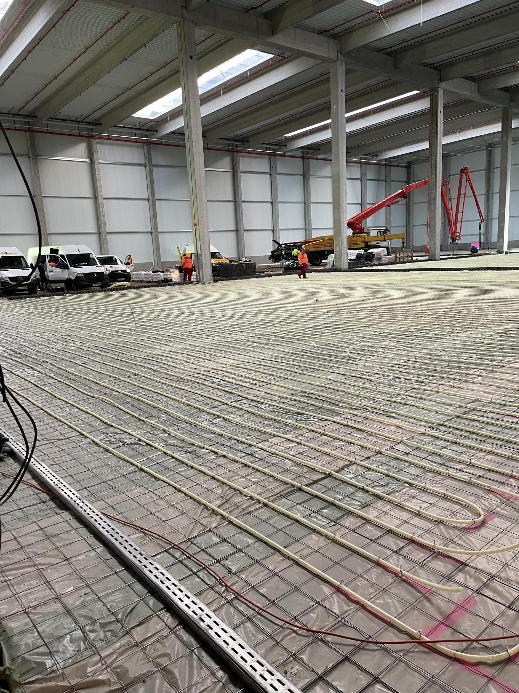

Nos Services

Béton Amprenté
Offrez à vos surfaces un aspect unique et esthétique avec notre béton amprenté, parfait pour les allées, patios et terrasses.

Béton Poli
Profitez de surfaces lisses et brillantes avec notre béton poli, idéal pour les espaces intérieurs modernes et élégants.

Béton Balayé
Optez pour un béton balayé qui offre une finition antidérapante, parfaite pour les trottoirs, parkings et zones industrielles.

Béton Désactivé
Créez des surfaces résistantes et esthétiques avec notre béton désactivé, idéal pour les zones piétonnes et les allées paysagères.

Sols industriels
Assurez durabilité et performance avec nos revêtements de sol industriels, parfaits pour les espaces de production, les entrepôts et les zones à fort trafic.